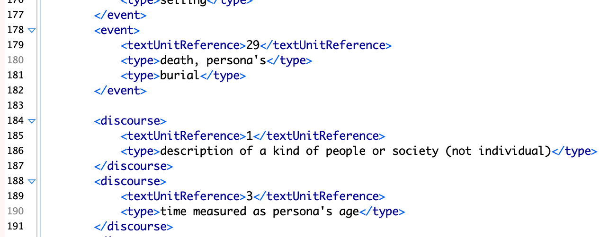

CBW

Since 2018 I have been Project Manager of
Collective Biographies of Women, a digital project led by PI Alison Booth. CBW is composed of an annotated bibliography of women's biographies (mostly from 1800-1920) and the various projects/analyses we perform on those biographies.
Project Management and BESS
As PM, I train and direct a team of research assistants to use XML. We perform narratological analyses via a system we call BESS (Biographical Elements and Structure Schema). BESS is a well-organized system of annotations for biographies. I have blogged about BESS here and written a Python script to analyze BESS available here.

I train research assistants—mostly graduate students in English, but also some undergraduates—by taking them through XML at both intuitive and technical levels. A partial list of the RAs at UVA who I've trained, directed, and had the pleasure of working with is below:
- Isabel Bielat
- Mikki Stacey
- Kaylee Lamb
- Zaina Ujayli
- Ren Capucao
- Emily Chang
- Paige Hillman
- Marissa Herzig
- Hanna Rosenberg
- Kathy Chen
- Mackenzie Daly
- Yichu Wang
- Anna Lee
Victorian Studies
BESS is vital to performing what we call "mid-range reading"; a paper about this method is forthcoming in
Victorian Studies.